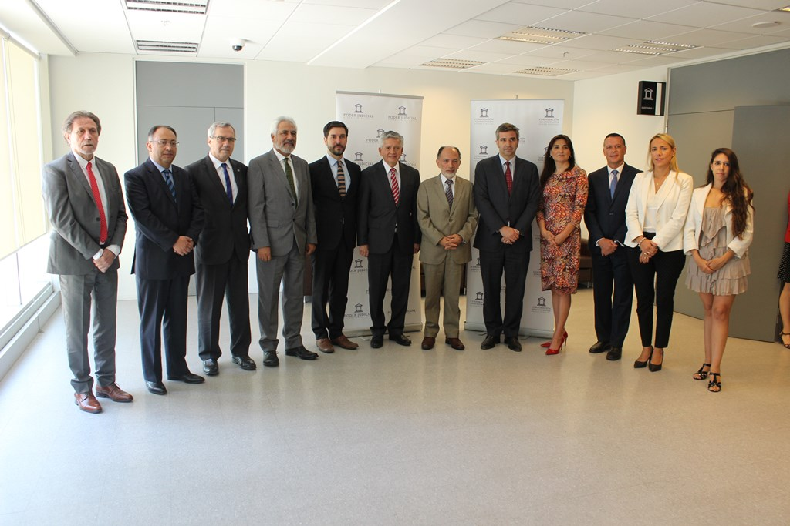
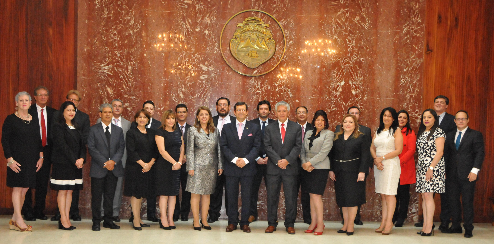

<div class="container">
  <div class="row col-md-12 col-lg-12">
    <div class="card mb-6">
        
        <div class="card-body">
          <h5 class="card-title">Chile – Ministro Sergio Muñoz encabezó 5ta Reunión de la comisión Iberoamericana de mecanismos alternativos de resolución de conflictos y TTD.</h5>
          <p class="card-text">
              El ministro de la Corte Suprema y coordinador nacional de la cumbre iberoamericana, 
              Sergio Muñoz, encabezó  la quinta reunión de la Comisión Permanente de Mecanismos Alternativos 
              de Resolución de Conflictos y Tribunales de Tratamiento de Drogas y Alcohol, efectuada hoy …  
          </p>
          <p class="card-text"><small class="text-muted">Febrero 13, 2018 </small></p>
        </div>
      </div>
      <div class="card mb-4">
          
          <div class="card-body">
            <h5 class="card-title">4° Reunión de la Comisión de Mecanismos Alternativos de Resolución de Conflictos y Tribunales de Tratamiento de Drogas y/o Alcohol</h5>
            <p class="card-text"></p>
              Una exitosa presentación realizaron las delegaciones que asistieron  a la 4° reunión de la 
              Comisión Permanente de Mecanismos Alternativos y Restaurativos para la Resolución de Conflictos 
              y Programa de Tribunales de Tratamiento de Drogas y Alcohol, MARC-TTD, realizada en San …
            <p class="card-text"><small class="text-muted">Septiembre 2, 2017</small></p>
          </div>
        </div>
  </div>
</div>